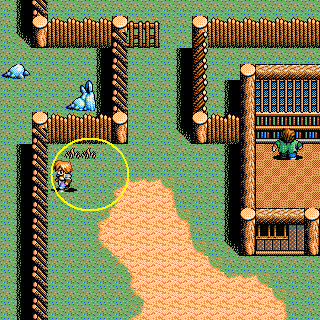

| 概要 | 情報 | アイテム一覧 |
| 敵キャラ一覧 | 攻略チャート | 地図 |
| ダウンロード | 英雄伝説 攻略へ |
|
第三章 リーゼルにある船に乗る ソニア合流 海賊船に襲われるので、投降する (イベント) 海賊島から船に乗り、スエルの村へ行く スエルの村の東にあるアムダの村へ移動 村の奥へ移動し、兵士に話しかける (イベント) スエルの村の北に位置するヨルドの港へ移動 (イベント) スエルの村の北東にあるバーバラの家へ移動し、バーバラと会話 バーバラの家の北にあるナッシュの村へ行く 村の奥の屋敷へ行き、会話 (イベント) バーバラの家へ移動し、バーバラに話しかける (イベント) アムダの村へ行き、村長の家にいる老人に話しかける 海賊島へ移動し、船長に話しかける ヨルドの港へ移動し、漁師に話しかける 海賊島へ移動し、船長に話しかける 海賊島の港へ移動する 海賊島のベッドで寝ている海賊に話しかける 「ワプの翼」を購入し、アムダの村の北にあるミラルダの家へ移動 ミラルダに話しかける 海賊島へ移動し、船長に話しかける (イベント、「太陽の石」入手) ヨルドの港へ移動し、漁師に話しかける (「黄金の鍵」を入手) バーバラの家の北にある王家の墓へ行き、「ギルモアの星」を入手 ヨルドの港の南にあるセリスへ行く 奥の城へ移動する (イベント) 「ギュリゲス」と戦う ギュリゲスは援軍を呼ぶので、援軍を読んだ場合は先にそちらを倒した 方が無難です。サイレス1を使うかどうかは、戦況に応じて。とにかく、回復 アイテムは多い方がいいです (イベント) |
|
第四章 セリスの酒場で「ラム酒」を買う (4つほど買えばいい) 海賊島へ行き、船長に話しかける (イベント) 火薬庫へ行き、「火薬」と交換する バーバラの家の東にある国境の洞窟へ行く 洞窟の水門を閉めて、隣国へ移動 国境の洞窟の東にあるバズヌーンへ移動 バズヌーンの城内にいる「クレア」に話しかける バズヌーンの北東にあるカウルの村へ行き、「シンシア」に話しかける カウルの村の西にあるエメの村で、家に一人でいる男性に話しかける エメの村の北西にあるルドラへ行き、「ハリー」に話しかける バズヌーンの東にある風見の塔の頂上へ移動 カウルの村へ行き、ドラゴンの飼い主に話しかける ルドラへ行き、ハリーに「ドラゴンの布」について聞く カウルの村へ行き、ドラゴンの飼い主に話しかける 犬がいた場所を上下し、「ドラゴンの卵」を見つける  (イベント) 宝箱を開き、「ドラゴンの布」を入手 ルドラへ行き、ハリーに話しかける 風見の塔の最上階へ移動 (バズヌーン城内へ着地) 「シルフィ」と戦う 男性は全員混乱しているので、ソニアにがんばってもらいましょう。 回復アイテムを多めに持ち、味方に殺されないように。 (イベント) 国境の洞窟の東にある風よけの大穴へ移動 大穴の奥で「アクダム」と戦う オビスを使ってくることもないので、セリオス一人でも十分戦えます。 しかし、念のために回復アイテムは持っておきましょう。 (イベント) 「ベラミス」と戦う 仲間が合流するので、がんばって攻めましょう。レベルをちゃんと上げて いれば、サイレス1を使わなくとも勝てます。 (イベント) |
| 概要 | 情報 | アイテム一覧 |
| 敵キャラ一覧 | 攻略チャート | 地図 |
| ダウンロード | 英雄伝説 攻略へ |